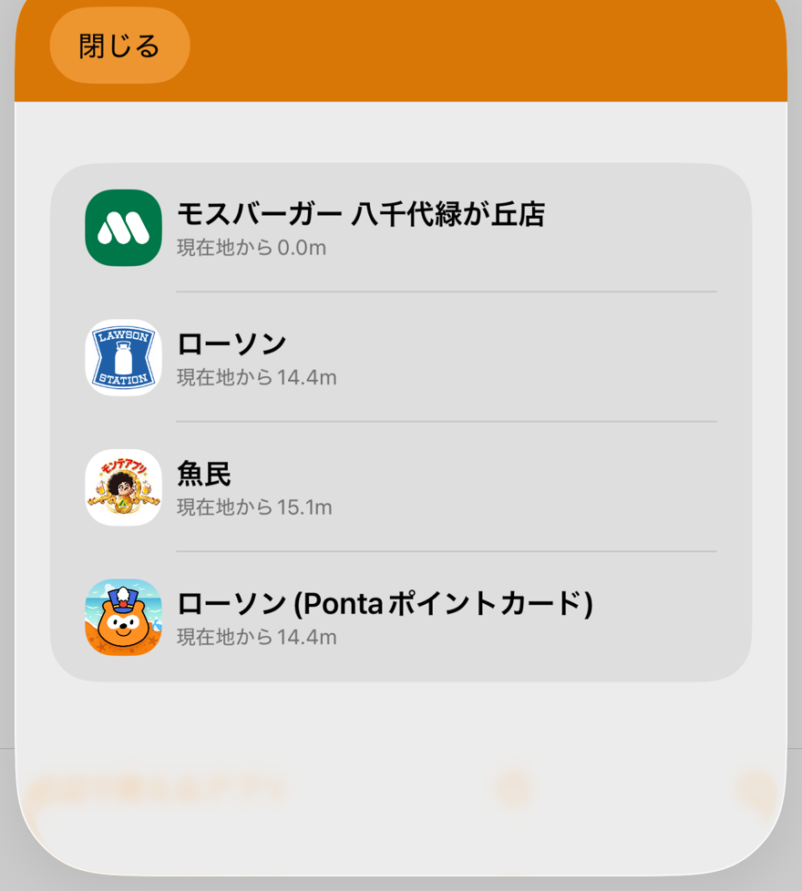
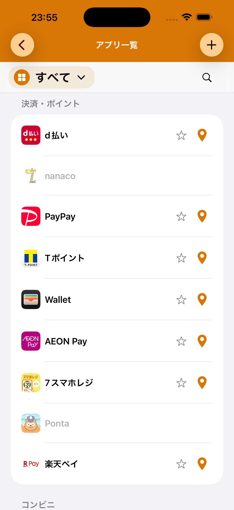
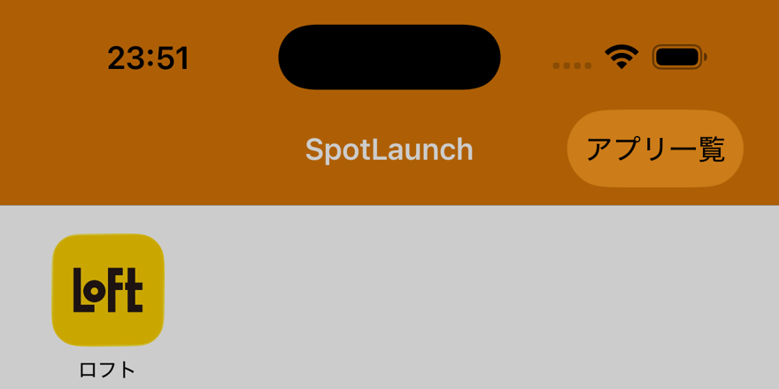

SPOTLAUNCH
お店に着いたら、使うアプリはSpotLaunchにおまかせ。
コンビニ、スーパー、ドラッグストア、飲食店、アパレル、ホテル…。お店ごとに会員アプリや支払いアプリを 使い分けるのは、それだけで一苦労です。SpotLaunchは、今いる場所の近くの店舗を自動で検出し、 そこで使えるアプリだけをポップアップ表示。あとはタップするだけで起動できます。 アプリを探す手間も、レジ前でのもたつきもなくなります。

01主な機能
近くの店舗を自動検出
SpotLaunchを起動するだけで、現在地から近い店舗で使えるアプリの一覧がポップアップ表示されます。「このお店、どのアプリだっけ」と迷う必要はありません。
日本全国、幅広いジャンルに対応
コンビニ・スーパー・ドラッグストア・ファストフード・レストラン・アパレル・家電量販店・ホテルなど、日本国内の主要チェーン店の位置情報とアプリを、あらかじめ多数登録済み。特別な設定なしにすぐ使い始められます。

お気に入りでワンタップ起動
よく使うアプリはお気に入りに登録しておけば、トップ画面からいつでもワンタップで起動可能。お店に着く前でも、家を出る前でも、すぐに開けます。

登録されていない場所・アプリも自分で追加
まだ登録されていないお店や独自のアプリでも、現在地に紐づけて登録すれば、次回からは同じように自動でポップアップ表示されます。ショートカット機能を使えば、カスタムURLスキームが分からないアプリでも追加できます。
02SpotLaunchを使うメリット
- アプリ探しの時間をなくす
- ホーム画面の中から目当てのアプリを探したり、フォルダを開いたりする手間がなくなります。 レジ前で焦ってスマホをスワイプする、という場面も減らせます。
- ポイント・クーポンの取りこぼしを防ぐ
- 会員アプリの存在自体を忘れてしまい、ポイントやクーポンを取りこぼした経験がある方も多いはず。 店舗の近くで自動的に思い出させてくれるので、獲得漏れを防げます。
- プライバシーに配慮した設計
- 近くの店舗の判定はすべて端末内で行われ、位置情報が外部のサーバーに送信されることはありません。 広告表示やアクセス解析(トラッキング)も行っていません。
- 自分だけの使い方にカスタマイズ
- よく行くお店やお気に入りのアプリに合わせて、表示内容を自由に調整できます。 使えば使うほど、自分の生活圏にフィットしていきます。
03料金について
初回起動から7日間は、課金なしですべての機能をお試しいただけます。7日を過ぎて継続してご利用いただく場合は、 月額・年額のサブスクリプションではなく、買い切り(1回のお支払い)でのご提供です。
04もっと詳しく
具体的な使い方は「使い方・サポート」ページでスクリーンショット付きに解説しています。 ご不明な点やご要望があれば、お気軽にお問い合わせください。